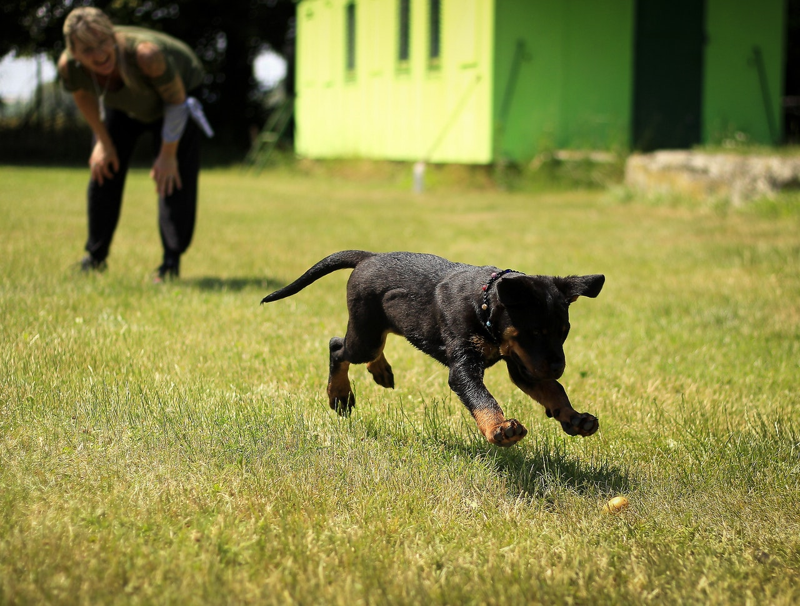

Dresura pasa
Nakon hiljadu godina prakse, možda mislite da bi dresura pasa bila prirodan, gotovo intuitivan proces za nas ljude. Ali, prečesto, mi pravimo iskrene greške u obuci koje rezultiraju neželjenim ponašanjem i napetim odnosom sa vašim psom. Zahvaljujući otpornoj prirodi psa, manje greške retko dovode do katastrofe. Međutim, velike greške mogu koštati vlasnike (i pse) godine frustracije. Zbog toga vam portal www.sapica.info navodi deset najvećih grešaka u treningu koje primećujemo kod vlasnika, a ujedno ćemo vam dati alternative za poboljšanje odnosa sa voljenim ljubimcem. Imajte na umu da se one odnose samo na tehniku obuke, a ne na druge važne oblasti kao što su socijalizacija, emotivni razvoj ili vežbanje.
1. Vašeg psa ne trenirate dovoljno često
Većina od nas uči osnovne komande i pravila ponašanja svoje nove pse. Ali kada se odnos stabilizuje, često na tome i ostane. Prema tome, vremenom se ponašanje može pogoršati; psi često slabije reaguju. Ova degradacija je jednostavno nedostak prakse; ako igraš basket samo jednom godišnje, igraćeš ga loše, zar ne?Umesto da se vodite sistemom „naučio sam ga i to je to“, trudite se da sa vašim psom redovno trenirate i održavate tu „radnu kondiciju“ vašeg psa i nekoliko puta dnevno. “Sedi” pre davanja večere, “čekaj” na vratima pri izlazu, i slično treba da bude jedna spontana i nepredvidiva radnja. Svakog meseca, podučavajte novo ponašanje da bi vaš pas bio motivisan da razmišlja i da obnavlja taj osećaj korisnog i nagrađenog.
2. Ponavljate previše komande
Ovo često vidimo, posebno među vlasnicima početnicima sa zahtevnijim psima. Vlasnik podučava komandu “sedi”, ali zbog ometanja psa, loše tehnike ili zabune kod psa, ljubimac ne reaguje. Vlasnik zatim više puta forsira komandu dok, nakon šestog ili sedmog pokušaja, pas ne sedne nevoljno i potišteno. Ovo odugovlačenje postaje naučeno ponašanje koje je teško promeniti.
Ovo se često dešava kod vlasnika koji primenjuju oštar pristup u dresuri kao i kod pasa koji nevoljno rade neke radnje. Snažni i dominantni psi, na primer, ne vole da legnu po naredbi, jer to simbolizuje priznanje dominacije. Plašljivi psi se takođe odupiru ležećem položaju, jer se u tom položaju osećaju nesigurno.Kada podučavate „sedi“, činite to kao da je to zabavan trik. U početku koristite omiljene poslastice, pohvale, zatim radite na različitim lokacijama, postepeno smanjujući motivaciju hranom uz istovremeno povećanje pohvala. Sedi, dođi i lezi treba da budu omiljene komande vašeg psa koje on izvodi sa velikim zadovoljstvom. Jednom kada ste sigurni da pas zna komandu, samo jednom izdajete naredbu! Ako vas ignoriše, to je ili zato što to niste učili psa kako treba, ili je pas ometen ili jednostavno buntovan (da i to je moguće). Odvedite psa na mirno mesto i probajte ponovo, ako još uvek ne reaguje, vratite se na osnove i ponovo naučite, izbegavajući grešku da previše ponavljate komande, ili da terate psa da radi nevoljno.
3. Vaši treninzi traju predugo ili prekratko
Podučavanje psa novom ponašanju je proces evolucije, a ne revolucija. Ključ je u spoznaji da je normalno da su potrebne brojne sesije kako bi se usavršila neka nova komanda.Vreme provedeno na treningu treba provesti u pozitivnoj i prijatnoj atmosferi, a čim postignete neki očigledan nivo uspeha, nagradite i zatim prekinite dresuru. Nemojte previše insistirati na usavršavanju i ponavljanju, jer ćete na kraju dosaditi psu i zapravo ga usloviti da postane nezainteresovan za nove komande. Takođe, gledajte da sesiju završite nekim uspehom, pa makar i delimičnim. Zapamtite, bolje deset jednominutnih treninga nego jedan od pola sata.
4. Ponašanje vašeg psa i poslušnost varira u različitim okruženjima
Ako naučite psa komandu “sedi” samo u tišini vaše dnevne sobe, to je i jedino mesto gde će pouzdano sesti. Ovo je greška koju mnogi vlasnici čine, što dovodi do neuspeha u drugim okruženjima.Da biste postigli rezultat, prvo ga naučite kod kuće bez ometanja. Zatim postepeno povećavajte faktore ometanja, uključite televizor ili pozovite drugu osobu da vam se pridruži. Kada se to usavrši pređite u dvorište. Nakon toga radite sa psom u prisustvu drugih osoba ili psa. Postepeno prelazite u urbanija okruženja sve dok pas dosledno reaguje na komande, čak i na raskrsnici u centru grada. Ovo je posebno važno kada se radi naredba opoziva, komanda koja bi jednog dana mogla da spasi život vašeg psa.
5. Previše se oslanjate na nagrade hranom, a ne na pohvale i poštovanje
Zalogaj kao nagrada je odličan način za pokretanje ponašanja ili za pojačavanje tog ponašanja povremeno kasnije, kada pas već zna komande. Ali česta upotreba poslastica može da deluje protiv vas. Može se razviti u umu psa takva fiksacija na hranu da se samo željeno ponašanje kompromituje i fokusiranje na vlasnika postaje slabo. Retko kada ćete videti psa u lovu ili policijske pse kojima se nudi hrana za vreme obavljanja posla. Zašto? Zato što bi to razbilo fokus i ometalo stvarni učinak. Umesto toga, koristite drugu motivaciju uključujući pohvalu ili kratku igru sa omiljenom igračkom. Najbolja nagrada za ove pse dolazi iz radosti u samom učestvovanju u lovu ili policijskom zadatku. Svakako, dresuru za nove komande započnite sa poslasticama, ali kada pas nauči ponašanje, zamenite hranu pohvalom, igrom ili igračkom. Zapamtite da nepredvidivi tretman nagrađivanja radi izoštravanja ponašanja, zna da bude korisniji od česte, očekivane nagrade koje usporavaju performanse i smanjuju fokus. Takođe, shvatite da ste i vi nagrada, obradujte se kada pas uradi nešto što od njega tražite i to može biti veća nagrada od svih gore pomenutih.
6. Previše ste emotivni. Prekomerna emocija može zaustaviti sposobnost psa da uči.
Ako dresirate silom, ljutnjom ili iritacijom zaplašićete psa i trening pretvoriti u inkviziciju. Isto tako, ako trenirate sa velikim energetskim nabojima, prodornim naletima oduševljenja i prekomernim prikazima ushićenja, podići ćete nivoe energije daleko iznad onoga što je potrebno da se pas fokusira i uči. Pokušajte da usvojite ponašanje koje odiše osećajem “mirne ravnodušnosti” – ponašanje koje sugeriše kompetentnost i osjećaj lakog autoriteta. Opuštena, ljubazna, mentorska vrsta energije koja smiruje psa i ispunjava ga samopouzdanjem je poželjna u procesu dresure psa.
7. Vi ste reaktivni, a ne proaktivni
Trening pasa je sličan drevnoj borilačkoj veštini Tai či, sa balansom između fizičkog i filozofskog. Potrebno je vreme, tehnika i izdržljivost, kao i posvećenost razumevanju psa. To nije veština koja se može naučiti gledanjem jedne polusatne emisije ili čitanjem nekoliko knjiga. Potrebno je vreme! Mnogi vlasnici pasa još nisu ovladali vremenom i ne shvataju koliko je to važan faktor u vaspitanju psa. To vam je kao kad neko prvi put igra šah, on reaguje na pokrete protivnika, umesto da planira svoje. Umesto toga, vežbajte svoju tehniku, unapred predvidite reakcije psa, postajući proaktivan u procesu učenja.Na primer, ako pokušavate da rešite preterano lajanje, umesto da čekate da počne da laje, utičite psa pre nego što njegov mozak kaže „laj“ i odvratite ga u neko drugo, prihvatljivije ponašanje. Znajte da bilo koji stimulans koji izaziva lajanje mora biti ili eliminisan ili redefinisan kao „dobra stvar“ u glavi psa. Ovo zahteva iskustvo i proaktivnu ulogu sa vaše strane.
8. Niste dosledni
Psi moraju da osete da su njihovi mentori dosledni u ponašanju i primeni pravila. Ako previše varirate u vašim tehnikama dresure, posebno u početku, smanjićete sposobnost vašeg psa da uči. Na primer, ako jednog dana ostanete strpljivi sa tvrdoglavim psom, ali sledećeg dana izgubite strpljenje, on neće moći da predvidi kako ćete reagovati u datom trenutku. To razbija poverenje, umesto toga, držite se dosledne metodologije i budite nepokolebljivi u vezi sa odgovarajućim ponašanjem. Na primer, ako nije dozvoljeno penjanje na krevet, ali dozvolite da se to desi dva puta od deset, to je nedosledno. Postavite pravila i držite ih se.
9. Nedostaje vam poverenje
Gubitak samopouzdanja je slabost i kao prirodni predatorii, psi to mogu da osete instinktivno. Zato uplašeni ljudi češće budu ujedeni od smirenijih pojedinaca. Pokažite nedostatak samopouzdanja i pas će ga iskoristiti. To nije osuda vašeg ljubimca, to je samo priroda psa. Da biste to izbegli, jednostavno više radite i ostvarite neke uspehe u obuci što će svakako podići i vaše samopouzdanje.
10. Ne dresirajte svakog psa na isti način
Svaki pas ima svoju ličnost i profil ponašanja. Iako pasmina pomaže u određivanju toga, karakter psa pojedinca se mora razumeti pre uspešnog dresiranja. Kao neko ko dresira, morate odrediti koje metode će biti efikasne sa vašim psom. Na primer, većina retrivera je veoma društvena i može da podnese mnogo ljudi ili pasa oko njih ali probajte ovo sa čau čau, i možda ćete se iznenaditi.

Isto tako, pas sa izraženom željom za hranom će reagovati na poslastice, dok pas sa niskim može zahtevati drugačiju motivaciju. Stidljiv pas će se loše nositi sa oštrijom tehnikom treninga, dok veoma energičan pas neće čak ni čuti blagi poziv koji dolazi od trenera sa blagim stilom. Ako imate stidljivog psa, planirajte dresuru sa strpljenjem monaha. Trenirajte mirno, sa malo ometanja na početku. Trenirajte prema ograničenjima psa, ali planirajte da se postepeno uvučete u društvene situacije kako biste smanjili osetljivost i izgradili poverenje. Ako je vaš pas veliki i snažan, budite jednako veliki, jednako srdačni. Zbog te veličine i snage, jednostavno morate postići kontrolu nad njim, posebno u socijalnim situacijama. Dakle, razmislite o strategiji obuke koja se zasniva na ličnosti, veličini, starosti, energiji, rasi i istoriji. Ako se pridržavate ovih osnovnih smernica, polako ćete ovladati svim bitnijim tehnikama.